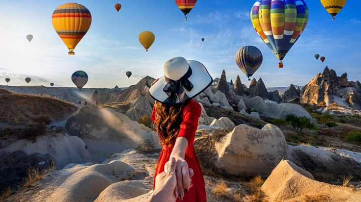
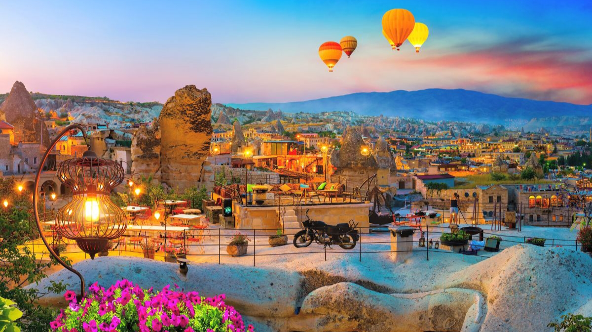

Cappadocia juga termasuk tempat wisata di Turki yang mendunia. Tak heran banyak wisatawan dari berbagai negara yang tidak mau melewatkan kesempatan untuk berkunjung ke Cappadocia saat berada di Turki.

Jika Anda tertarik mencobanya, siapkan dana sekitar 2 juta hingga 3,6 juta rupiah untuk merasakan suasana Turki dari udara.

Ciri khas dari Cappadocia yaitu banyaknya balon udara yang terbang di atas tebing-tebing batu dan pegunungan sehingga terlihat panorama yang luar biasa indah. Lokasi tempat wisata ini berada di distrik kuno di bagian timur dari Anatolia, tepatnya berada di dataran tinggi utara pegunungan taurus.